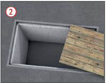
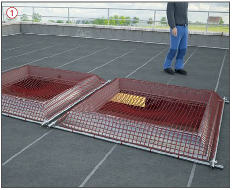
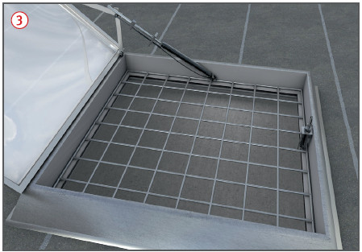
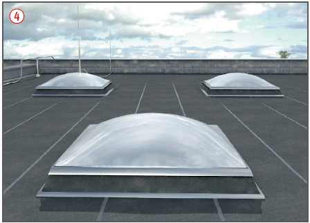
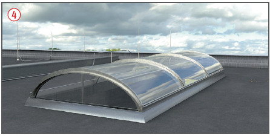
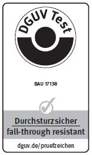

- dreiteiligen Seitenschutz oder
- unverschiebliche und tragfähige Abdeckung der Öffnung
 .
.

- ausreichend tragfähigen Stäben im Abstand von höchstens 15 cm oder
- Gittern
 im Raster von höchstens 15 cm x 15 cm oder
im Raster von höchstens 15 cm x 15 cm oder - Schutznetzen
 .
.
Dacharbeiten
|


| 1 | Zulässige Stützweiten in m | |||||
| Brett- oder Bohlenbreite cm |
Brett- oder Bohlendicke cm |
|||||
| 3,0 | 3,5 | 4,0 | 4,5 | 5,0 | ||
| 20 | 1,25 | 1,50 | 1,75 | 2,25 | 2,50 | |
| 24 und 28 | 1,25 | 1,75 | 2,25 | 2,50 | 2,75 | |




07/2021